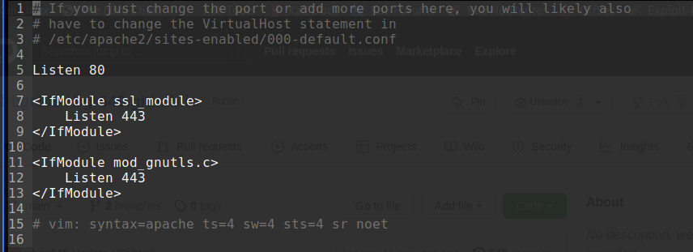
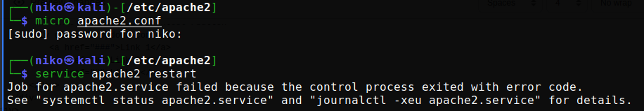
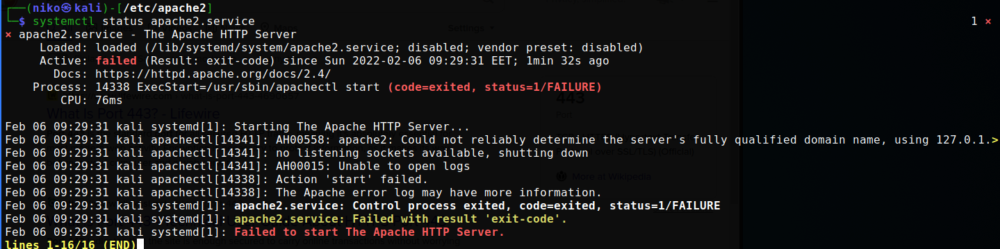

H3f
Virheen luominen .conf + loki
Tehtävänä oli tehdä muutoksia apachen konfiguraatiotiedostoon niin että muutos aiheuttaa virheen ohjelman toiminnassa. Päätin tehdä muutoksen apache2.conf tiedostoon. Aloitin tehtävän kopioimalla alkuperäisen .conf tiedoston komennolla sudo cp [kopioitava_tiedosto] [uuden_tiedoston_nimi].
Tämän jälkeen etsin apache2.conf tiedostosta rivin joka loisi mahdollisen virheen; "uloskommentoin" rivin 150 "include ports.conf".

Tiedostossa ports.conf määritellään mitä portteja kuunnellaan. Tiedosto näytti tältä:
Käynnistin apache2 uudestaan komennolla systemctl restart apach2, jonka jälkeen sain virheilmoituksen:
Annoin systemctl status apache2.service -komennon
"Failed to start The Apache HTTP Server"
Muuttaessani "include ports.conf" -kohtaa apache2.conf -tiedostosta, poistin Apachen astuksista portin 80 kuuntelun; portin 80 kautta kulkee http liikenne. Vaihtamani asetus tuli voimaan, mutta aiheutti sen ettei Apache suostunut uudelleen käynnistymään niillä konfiguraatioilla.